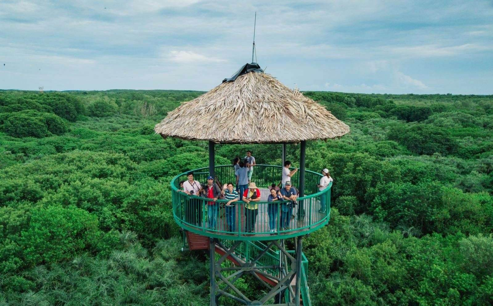
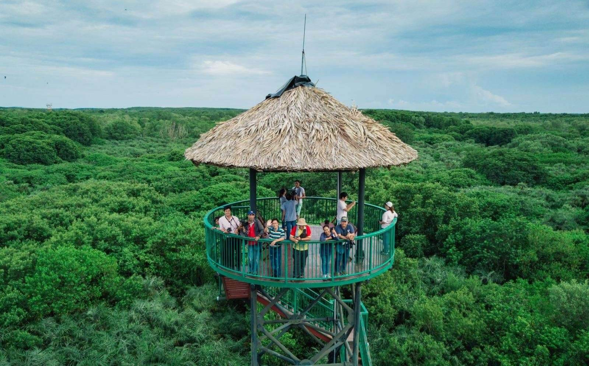
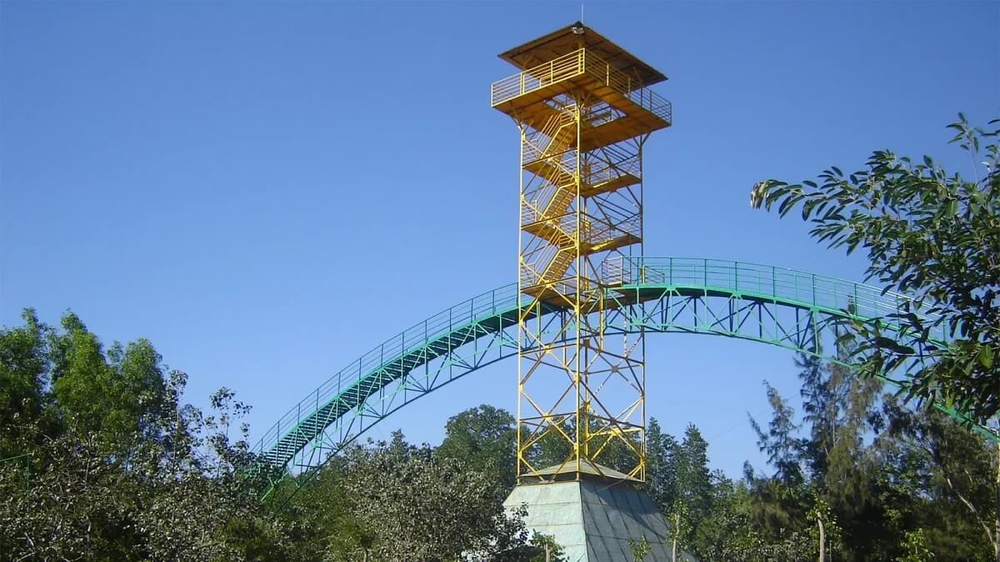
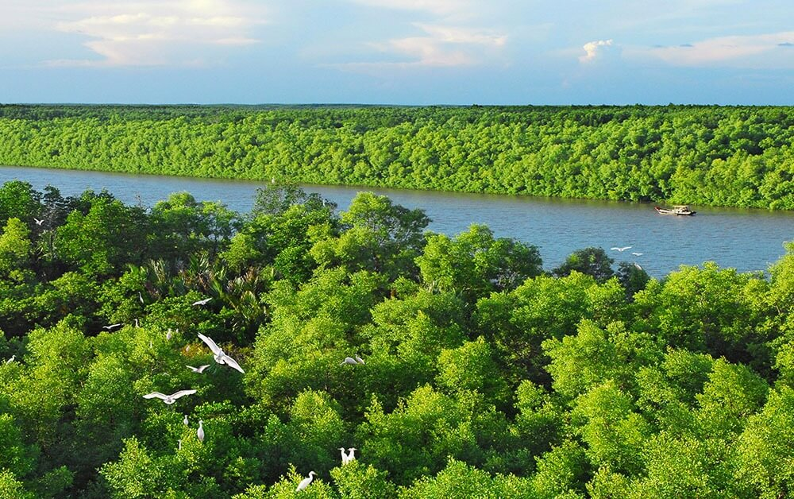
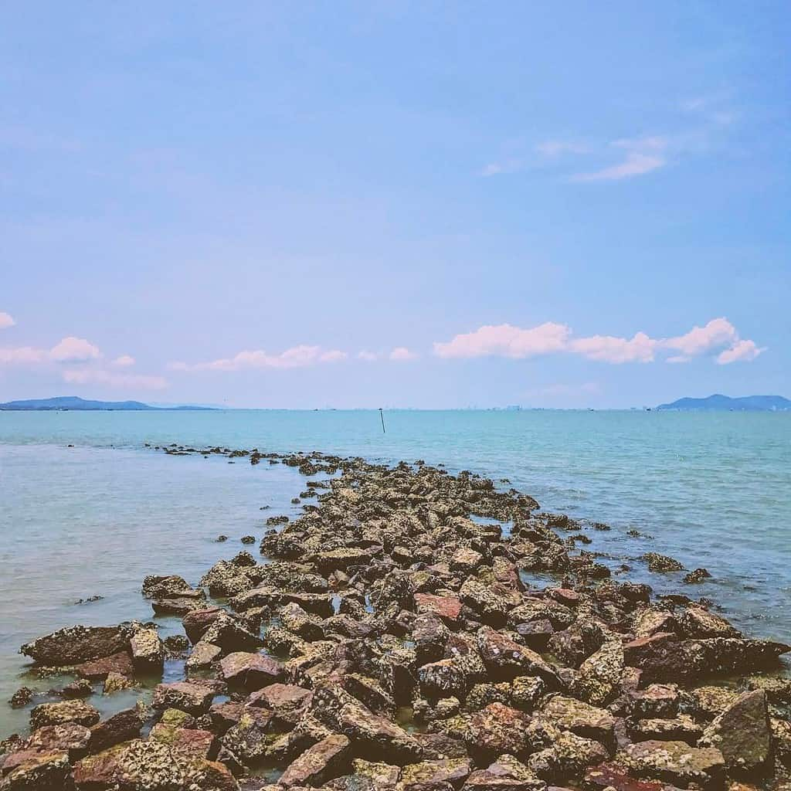
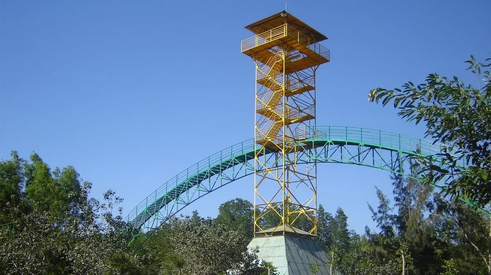
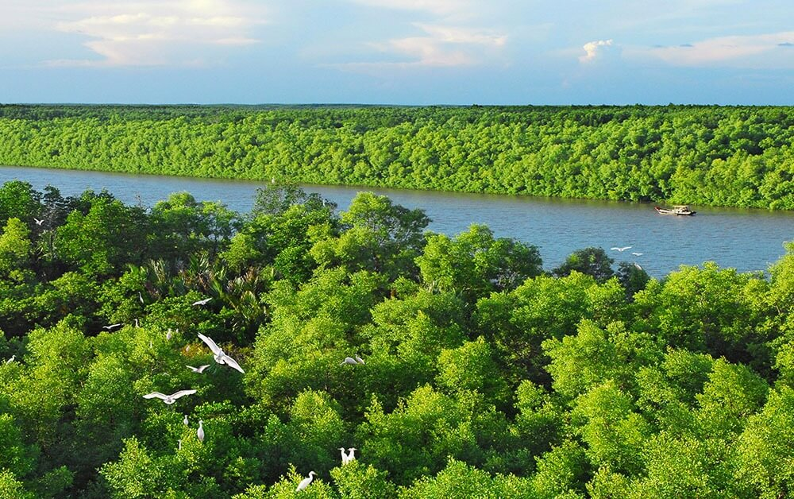
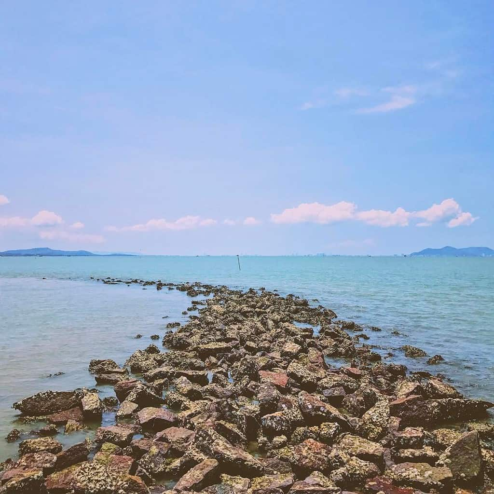

Giới thiệu
Tour du lịch Cần Giờ – Khu sinh thái Vàm Sát là hành trình khám phá thiên nhiên hoang sơ nằm cách trung tâm TP.HCM chỉ khoảng 50km. Quý khách sẽ có cơ hội trải nghiệm rừng ngập mặn nguyên sinh, lên tháp Tang Bồng cao 26m ngắm toàn cảnh rừng xanh bát ngát, chèo xuồng giữa đầm dơi, thử cảm giác mạnh với câu cá sấu và thưởng thức các món hải sản tươi sống tại địa phương.
Lịch trình
NGÀY 01 | TP.HCM – CẦN GIỜ – VÀM SÁT
Buổi sáng: Xe và hướng dẫn viên Vietnam Travel Group đón quý khách tại điểm hẹn. Khởi hành đi Cần Giờ. Trên đường đi, quý khách ghé tham quan chợ Hàng Dương – nơi bày bán nhiều loại hải sản tươi sống.
Buổi trưa: Quý khách đến khu du lịch Vàm Sát, dùng cơm trưa tại nhà hàng ven sông với các món đặc sản địa phương.
Buổi chiều: Tham quan rừng ngập mặn bằng xuồng máy, ghé thăm Đầm Dơi, câu cá sấu tại khu bảo tồn tự nhiên. Leo lên tháp Tang Bồng cao 26m để ngắm toàn cảnh rừng Cần Giờ. Sau đó quý khách trở lại TP.HCM, kết thúc chuyến tham quan.
Thư viện ảnh
 

 





Chính sách
- Xe đưa đón theo chương trình.
- Hướng dẫn viên chuyên nghiệp, nhiệt tình.
- Vé tham quan khu sinh thái Vàm Sát.
- Thuyền tham quan rừng ngập mặn, Đầm Dơi, tháp Tang Bồng.
- Bữa ăn trưa theo chương trình.
- Bảo hiểm du lịch trọn tour.
- Nước suối và khăn lạnh phục vụ trên xe.
- Chi phí cá nhân, mua sắm ngoài chương trình.
- VAT (nếu xuất hóa đơn +10%).
- Tiền TIP cho tài xế và hướng dẫn viên (không bắt buộc).
- Dưới 5 tuổi: miễn phí (ngồi chung ghế và ăn chung với người lớn).
- Từ 5 – 10 tuổi: 75% giá tour.
- Trên 10 tuổi: tính như người lớn.
- Dời ngày khởi hành trước 15 ngày không mất phí, sau 15 ngày mất 30%. (Không tính ngày lễ và chủ nhật), chỉ được dời 1 lần.
- Sau khi đăng ký huỷ tour mất 15% giá tour.
- Từ 15 đến trước 10 ngày trước ngày khởi hành chịu phí 30% giá tour (Không tính ngày Lễ và chủ nhật).
- Từ 10 đến 8 ngày trước ngày khởi hành chịu phí 50% giá tour (Không tính ngày Lễ và chủ nhật).
- Từ 5 - 7 ngày trước ngày khởi hành chịu phí 70% giá tour (Không tính ngày Lễ và chủ nhật).